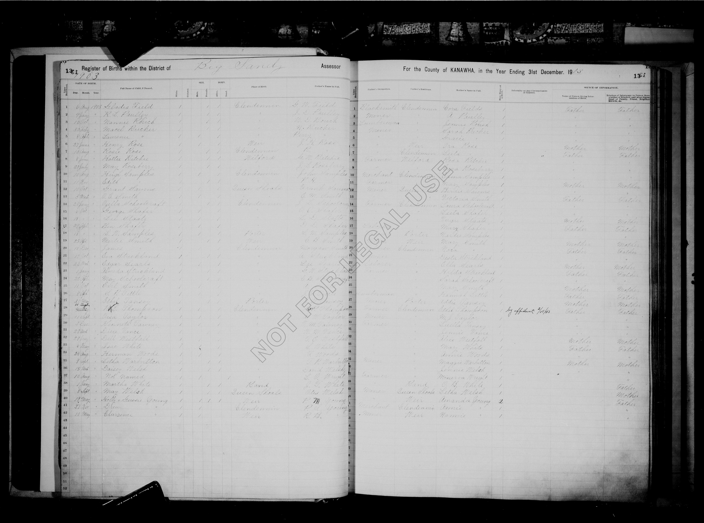

Philander Hamelton Samples
7 March 1868 – 8 February 1940
Quick Facts
Immediate Family
Parents
- Perry “Pete” Samples and Levina May White Samples (contributor-linked memorials; household census is consistent)
Spouses
- Mary Ida (Hayes) Samples (marriage index 1897)
Children
- Edith Elizabeth Samples Hoff (1903–1979)
- Berta May Samples
- Oscar Vincent Samples
- Philip Perry Samples
- Vina/Lovina Samples
- Ruth E. Samples
- Charles G. Samples
- Kitty T. Samples
- Gussie E. Samples
- One additional daughter appears as private/unnamed in a derivative tree; identity not established
Siblings
- Lewis Melvin Samples; John Wesley Samples; Levina Mae “Linnie” Samples; Walter Vernon Samples; half-siblings Richard Elton Samples, James Russell Samples, Maydo Victoria Samples Osborne, Chessie I. Samples (contributor-linked memorial group)
On Family Tree Sites
Person Archive
Life Timeline
7 March 1868
West Virginia birth index, Procious, Clay County.
10 June 1897
West Virginia marriage record transcription for Philander Samples and Mary I. Hayes; another index gives 1897.
1910
Philander H. Samples household in Big Sandy, Kanawha County, includes wife Ida M. and daughter Edith E., age 5.
1920
Philander Samples household in Kanawha County includes daughter Edith E., age 17; wife indexed as Mary T.
8 February 1940
Death index and memorial report death at Clendenin, Kanawha County.
Life Story
Philander’s public profile and contributor memorial identify his wife Mary Ida Hayes and daughter Edith; census indexes independently show Edith as a daughter in his household in both 1910 and 1920.
The household’s other children appear across 1900, 1910, and 1920 census indexes. Names vary: Vina/Lovina, Philip/Phillip, Kitty/Kittie, and a later Gussie entry. No exact sibling birth/death dates are asserted here without checking each individual record.
The Find a Grave family group reports four full and four half-siblings; this is secondary linked-family data and is retained with that limitation.
Photo Gallery



Sources and Evidence
- WikiTree Philander Samples profile: bibliography cites 1868 birth, 1940 death, census and state records; compiled.
- Philander Hamelton Samples memorial: derivative dates, cemetery and linked family group.
- West Virginia Vital Research Records marriage register image: 1897 record indexed under Philander Samples and Mary I. Hayes.
- 1910 census index for Edith in Philander H. Samples household.
- 1920 census index for Edith in Philander Samples household.
- Mary Ida Hayes Samples memorial and photos: derivative linked photo and family group.
Research Notes and Open Questions
- 1910 and 1920 census indexes use Ida M. and Mary T. for Philander’s wife; the birth index and family tree identify Mary Ida Hayes. Keep this as unresolved indexing variation, not separate spouses.
- Shared-tree sibling and child lists may contain duplicate/misdated people; the household indexes establish the core family but not every later spelling/date.
- The death/cemetery memorial reports an unmarked grave. No grave marker photo was located.
DNA
No DNA evidence reviewed for this profile.
Family Notes
Profile updated 24 November 2026. Relationships are sourced and uncertainty is retained where records conflict.